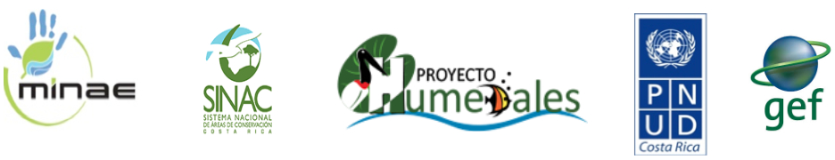

El Índice de Naturaleza de los sitios Ramsar de Costa Rica
Un proyecto piloto para cuantificar y reportar el estado de la biodiversidad
Por Manuel Vargas (mfvargas@gmail.com) y María Mora (mariamoracross@gmail.com)
Taller de cierre del Proyecto Humedales
San José, 23 de julio de 2018

El Índice de Naturaleza de Noruega
Aplicación del IN en los sitios Ramsar de Costa Rica
Unidades geoespaciales de análisis
Proceso y criterios de selección de los indicadores
Indicador: riqueza de especies de aves acuáticas residentes
Indicador: riqueza de especies de mamíferos terrestres
Indicador: cobertura y uso de la tierra
Resultados del cálculo del índice